Bestiário da Dimensão Sombria
Sprites pixelados · repouso, passos e ataque
Floresta Corrompida
 Broto CarnívoroMob
Broto CarnívoroMob Cogumelo VenenosoMob
Cogumelo VenenosoMob Lobo de EspinhosMob
Lobo de EspinhosMob Ent de SangueElite
Ent de SangueElite A Raiz ProfanaBoss
A Raiz ProfanaBossMinas Acorrentadas
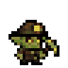
Goblin MineradorMob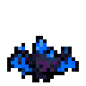
Morcego de CristalMob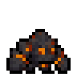
Carvão VivoMob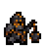
Carcereiro de PedraElite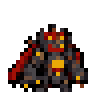
O Carcereiro de FerroBossDeserto das Cinzas
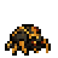
Escaravelho de ObsidianaMob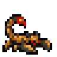
Escorpião das CinzasMob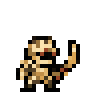
Soldado MumificadoMob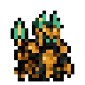
Guardião de VidroElite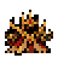
O Senhor das DunasBossFortaleza de Ferro
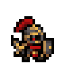
Armadura VaziaMob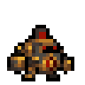
Autômato de GuerraMob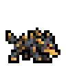
Cão de MetalMob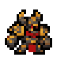
Cavaleiro da FornalhaElite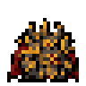
O Marechal BlindadoBossAbismo dos Ecos
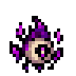
Olho FlutuanteMob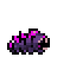
Larva do VazioMob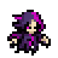
Espectro PartidoMob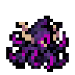
Devorador de EcosElite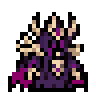
O Invocador do VazioBossCatacumbas do Silêncio
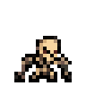
Esqueleto AcorrentadoMob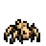
Aranha OssudaMob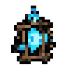
Alma AprisionadaMob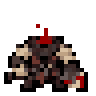
Carrasco Sem CabeçaElite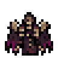
O Arauto MudoBossPortões da Ruína
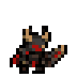
Soldado DemoníacoMob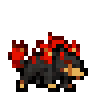
Mastim InfernalMob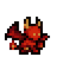
Diabrete de BrasaMob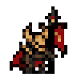
Porta-Estandarte da RuínaElite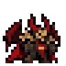
O Último GeneralBossCatedral Profanada
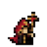
Acólito CorrompidoMob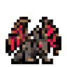
Gárgula de VitralMob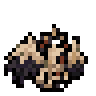
Serafim CaídoMob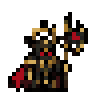
Inquisidor do EclipseElite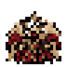
O Guardião do EclipseBossTrono do Rei Demônio
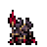
Guarda Real AbissalMob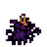
Sombra CoroadaMob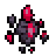
Fragmento da RuínaMob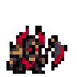
Executor RealElite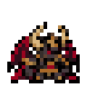
Azhrael, Rei da RuínaBoss